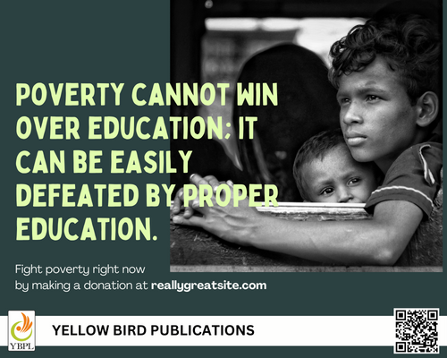
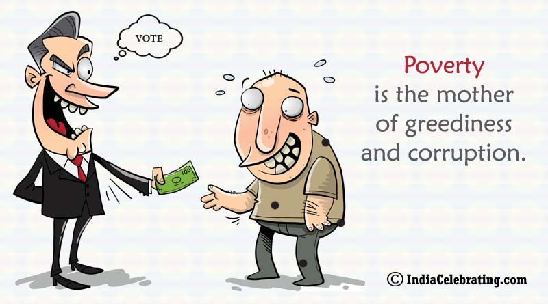
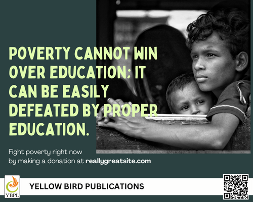
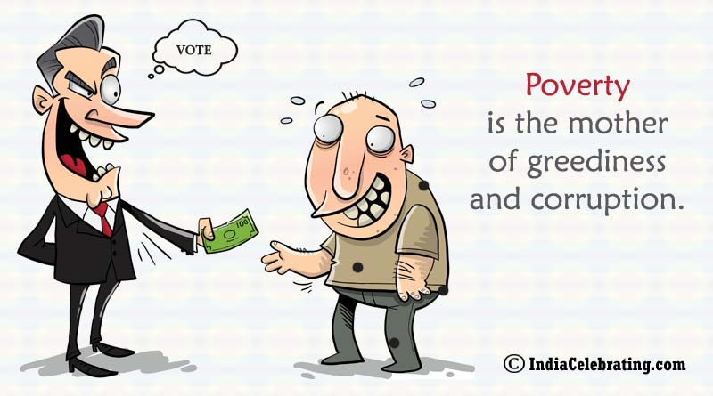
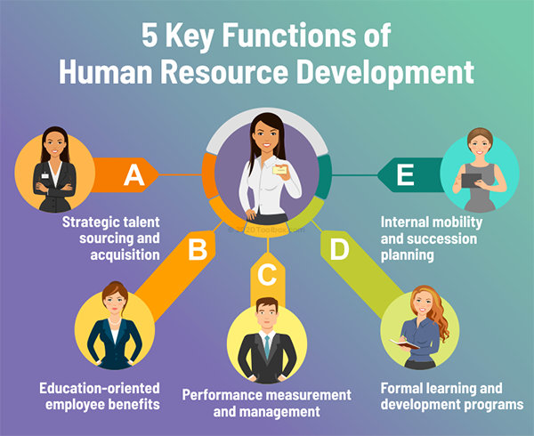
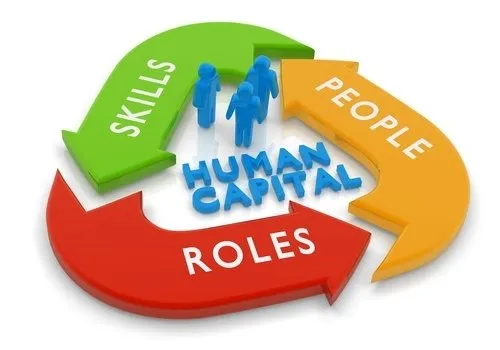
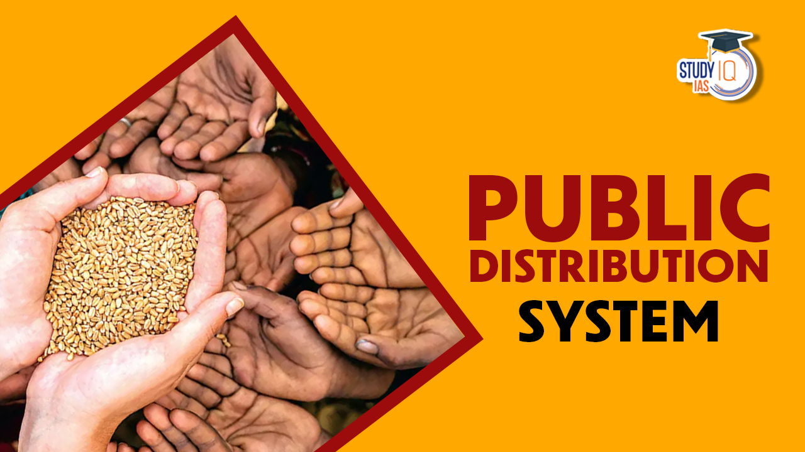
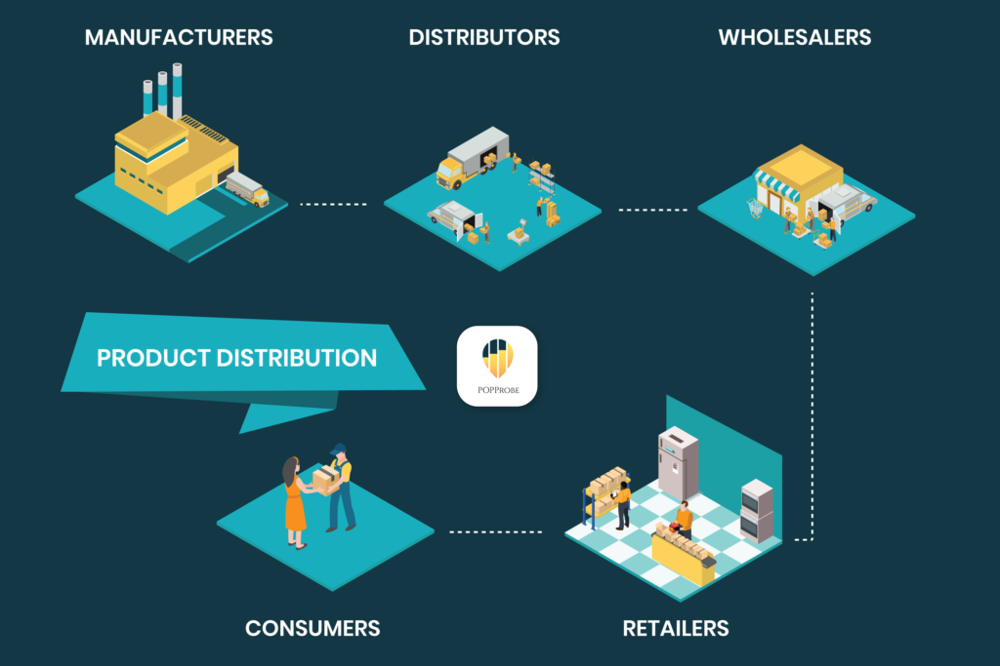
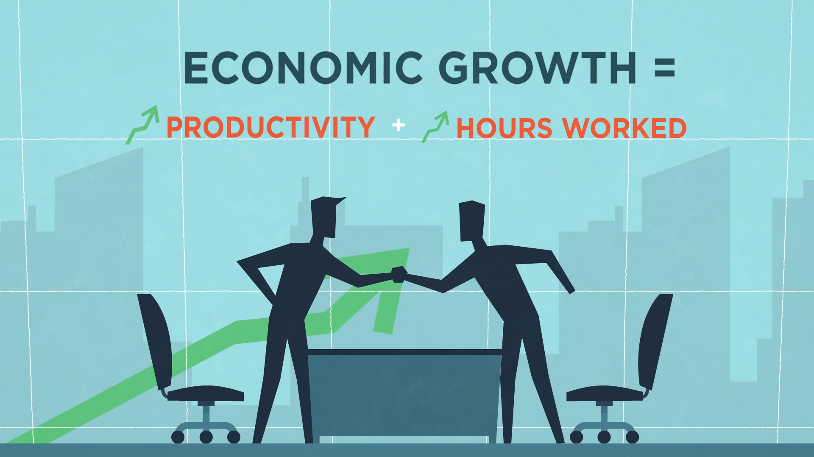

Even in the 21st century, nearly half of the world’s population, or three billion people lives on $2.50 a day, and 80 percent of the world’s population lives on less
than $10 a day.Focusing on how to stop poverty is very important, both in the ways that an individual can have an impact and on the wider changes that need to be made to bring an end to poverty.According to various surveys, most people in India do not have access to necessary healthcare facilities. India is at the 145th position out of the 195 countries with regard to the accessibility and quality of healthcare services. There are also several inequalities in education with a very high illiteracy rate and a huge gender disparity that has not yet been bridged. India has several other problems that need to be addressed adequately, like the lack of proper infrastructure, widespread corruption and high hunger rates. Other factors like discrimination also lead to the exclusion of some groups from society and aggravate poverty in the country.
Social media has become an integral part of daily life, and now is the time to use it as a voice of social good. Sharing links on Facebook , Twitter and other platforms will allow people to learn more about global poverty and will increase the general consciousness of the issue.We should hate poverty nut not a poor! We should keep poverty away but not a poor! We should help each and every poor to make poverty helpless. Education is the only weapon to win over poverty.
 



There are a few simple ways we can help as individuals, such as funding a poor child’s education or by sponsoring a poor family and
influencing others to do so. Raising money and donating it to a nonprofit can help as well.
Donations can help in so many ways. They do not always have to take the form of money. This can include donating books
to a poor child or buying groceries for a poor family for a week to help fight hunger. Donating old clothes, furniture and
toiletries can also help improve the well-being of the poor.
With two-thirds of the world’s illiterate being female, the ratio of boys and girls should be made equal in primary,
secondary and tertiary education.Girls that attend school are less likely to get married before age 18, thus decreasing child marriage rates by 64 percent worldwide. Similarly, literate women are less likely to spread diseases like HIV/AIDS due to a better knowledge of disease transmission, which helps to accelerate poverty reduction in the long run.
These human resource development not only directly generates a good deal of employment opportunities but also raises productivity and income of the poor. People equipped with skills, education and good health can easily-get wage employment or self-employment with higher productivity. In this way human resource development helps in reducing poverty. The experience of East and South-East Asian Countries, referred to above, and Kerala in our country shows that poverty can be significantly reduced through investment in human resource development. However, private sector, guided as it is by profit motive, will not adequately invest in the human resource development.
 Poor households spend nearly 80 per cent of their income on food. Therefore, an effective way of raising rural incomes and ensuring food security to the poor households is an assured supply of adequate quantity of food-grains and other essential commodities at subsidised prices, that is, at prices which are lower than the market prices.Some economists have suggested lowering of subsidies. What is needed is to ensure subsidised food-grains supply through PDS be made only to the targeted group of households living below the poverty line and not to all households. In this way the expenditure on food subsidy can be reduced significantly and only the poor will get the benefits of the subsidy. It is worth mentioning that Andhra Pradesh is a shining example of using PDS to help the poor under Rs. 2 per kilogram of rice supplied through ration shops.
 If economic growth has to be pro-poor or inclusive,the strategy of growth should be such that generates a lot of employment opportunities for the poor people in agricultural, industrial and services sectors at reasonable wages that enable them to meet their basic minimum needs.Such a pro-poor or inclusive growth strategy will involve adequate public expenditure on human resource development in the fields of education and health care which benefit the poor and enable them to participate in the activities that bring about expansion in output. Therefore, Kakwani and Pernia rightly defines pro- poor growth as “growth that enables the poor to actively participate and significantly benefit from economic activity”.
